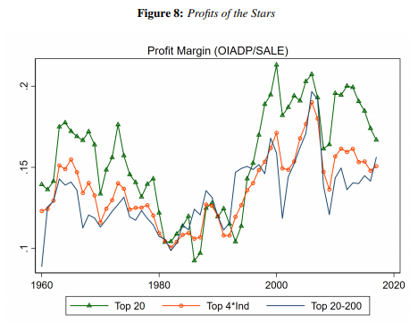
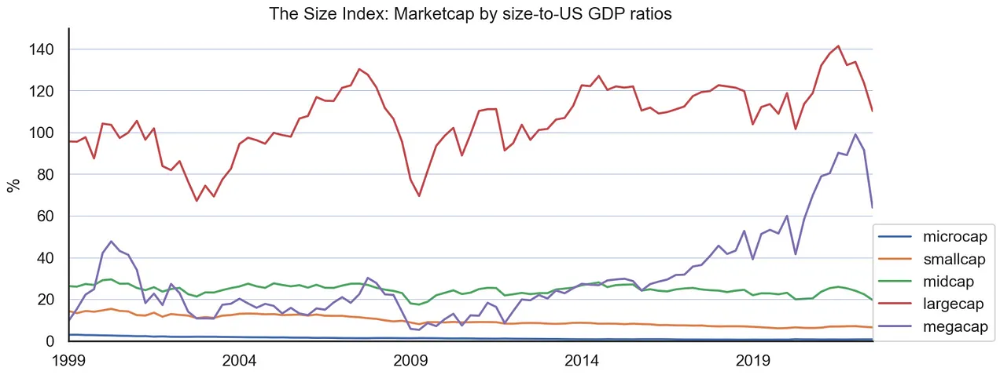
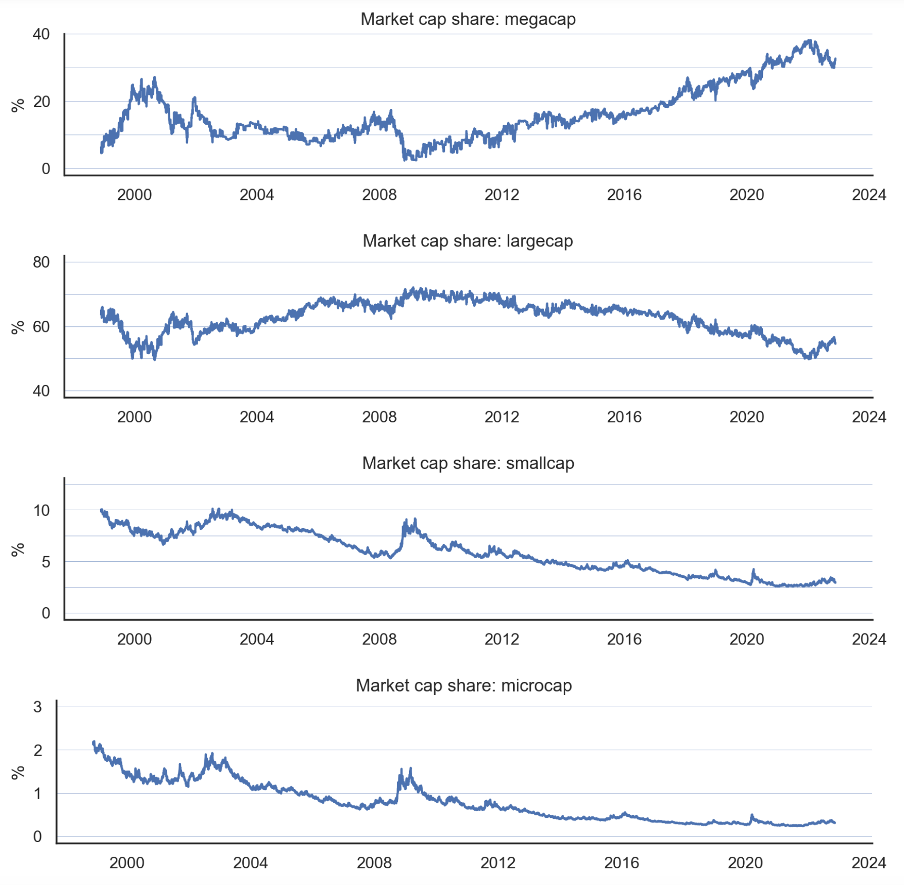
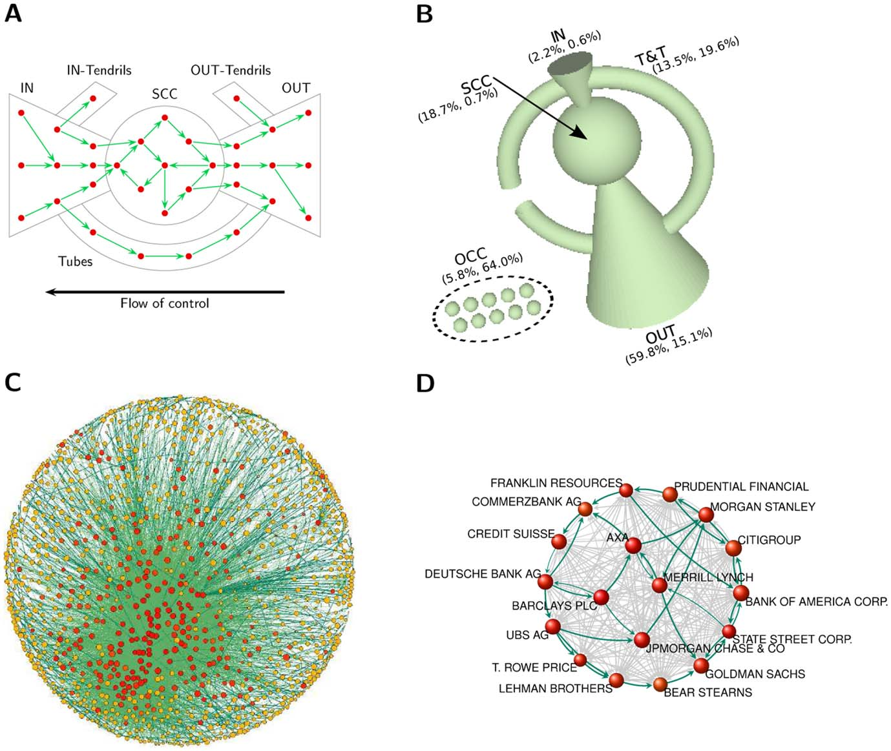
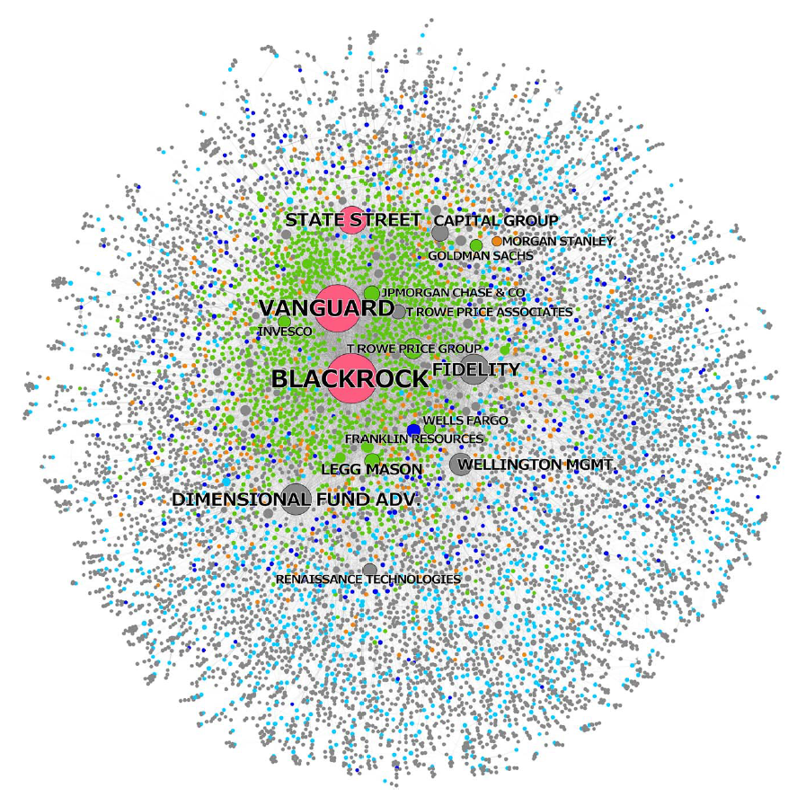

24 Concentration
24.1 Corporative State
Geir Ivar Jørgensen, Gule Vester Norge: Vi er eid av den korporative statens eiere Korporativisme av fascistisk kulør er hva vi har med å gjøre Korporasjoner styrer alle samfunnsområder for å tjene et globalisert oligarki av eiere. Beviset bør alle snart ha oppfattet ved hvor mye 1 prosenten eier i forhold til alle andre. Velgerne kan endre på dette, men da må de stemme de korporative eieres politiske lakeier bort fra makten. I Norge betyr det at velgerne må slutte å stemme på Ap+Erna & Co. fordi det er deres ansvar at vi blir overstyrt av EU via EØS-avtalen. EU er et politisk system som har korporativisme som fundament og struktur. EU er skapt av og for den korporative statens aktører.
24.2 Profitable degradation
In recent decades, an unprecedented consolidation among corporate players has taken place around the world. Today, 10 per cent of the world’s public companies generate 80 per cent of all profit.
24.3 Superstars
Memo Economist
As a proportion of GDP, American corporate profits are higher than they have been at any time since 1929.
Pulling ahead of their rivals in one area after another and building up powerful defences against competition, including enormous cash piles equivalent to 10% of GDP in America and as much as 47% in Japan.
In the 1980s and 1990s management gurus pointed to the “demise of size” as big companies seemed to be giving way to a much more entrepreneurial economy. Giants such as AT&T were broken up and state-owned firms were privatised. High-tech companies emerged from nowhere. Peter Drucker, a veteran management thinker, announced that “the Fortune 500 [list of the biggest American companies] is over.” That chimed with the ideas of Ronald Coase, an academic who had argued in “The Nature of the Firm” (1937) that companies make sense only when they can provide the services concerned more cheaply than the market can.
But now size seems to matter again. The McKinsey Global Institute, the consultancy’s research arm, calculates that 10% of the world’s public companies generate 80% of all profits. Firms with more than $1 billion in annual revenue account for nearly 60% of total global revenues and 65% of market capitalisation.
The share of nominal GDP generated by the Fortune 100 biggest American companies rose from about 33% of GDP in 1994 to 46% in 2013, and the Fortune 100’s share of the revenues generated by the Fortune 500 went up from 57% to 63% over the same period. The number of listed companies in America nearly halved between 1997 and 2013, from 6,797 to 3,485, according to Gustavo Grullon of Rice University and two colleagues, reflecting the trend towards consolidation and growing size. Sales by the median listed public company are almost three times as big as they were 20 years ago. Profit margins have increased in direct proportion to the concentration of the market.
Startups, meanwhile, have found it harder to get off the ground. Robert Litan, of the Council on Foreign Relations, and Ian Hathaway, of the Brookings Institution, note that the number of startups is lower than at any time since the late 1970s, and that more companies die than are born, pushing up their average age.
The superstar effect is particularly marked in the knowledge economy. In Silicon Valley a handful of giants are enjoying market shares and profit margins not seen since the robber barons in the late 19th century. “Competition is for losers,” says Peter Thiel, a co-founder of PayPal, a payments system, and the first outside investor in Facebook. On Wall Street the five largest banks have increased their share of America’s banking assets from 25% in 2000 to 45% today.
Today’s superstar companies are big in different ways from their predecessors. In the old days companies with large revenues and global footprints almost always had lots of assets and employees. Some superstar companies, such as Walmart and Exxon, still do. But digital companies with huge market valuations and market shares typically have few assets.
Yet even “old” big companies employ far fewer people than they used to. Exxon, the world’s most successful oil company, has cut back its workforce from 150,000 in the 1960s to less than half that today, despite having merged with a giant rival, Mobil
The “new” big companies are becoming more like the corporations of yore. High-tech companies often give senior jobs to former Washington insiders and employ armies of lobbyists. Many modern superstar companies park their money in offshore hideaways and devote considerable efforts to keeping down their tax bills. Superstar companies tend to excel at everything they do—including squeezing as much as they can out of government while paying the lowest possible taxes.
The age of entrepreneurialism, ushered in by Britain’s Margaret Thatcher and America’s Ronald Reagan, is giving way to an age of corporate consolidation even as most companies are becoming more virtual
Rise of superstars - Economist (pdf-printout)
Memo Noah Smith
Giant companies are increasingly losing their productivity edge but sucking up more resources and making more profit. In other words, this supports the idea that much of what looks like superstar performance is actually just hogging the ball.

Of course, superstar companies’ real contribution to productivity growth depends on a third thing: How their presence in the market affects smaller companies. Does their growing market power starve smaller firms of resources, or does it drive them to greater feats of productivity in an attempt to keep up
The slowing productivity growth of giant companies, together with their rising market share and profit margins, suggests that we shouldn’t be so quick to buy the soothing story that highly efficient big companies deserve their market share because they’re showering us with a bounty of cheap goods. There’s something else going on here, and it should worry us.
Industries with growing concentration show increased productivity with flat prices, suggesting increasing markups…That is consistent with the story that big dominant companies are using market power to squeeze more money out of consumers.
Noah Smith (2021) Are Big Companies just better?
PolicyTensor
All evidence points to a stronger concentration of power in American capitalism; perhaps Western and maybe even global capitalism. I will show that this restructuring in favor of superstar firms has taken place recently; since 2016. The mighty are more powerful today than they have been for a century.

Fig: Most of the action has been in megacaps.
Megacaps are companies whose market value is $200bn or higher. Two-thirds of all publicly traded stocks are smallcaps or microcaps, while less than 1 percent are megacaps. The 37 megacaps account for 33% of the financial firepower of all publicly traded companies in the United States. It was not until after the GFC, and especially after 2016, that the megacaps took off.

Fig: Market Cap Share by Size
The decline of small and microcaps precedes the rise of the megacaps by at least a decade. What we see here is a kind of “separability” — the decline of the small began well before the rise of the big. The negative trend dates all the way to the dot-com era. This period of decline corresponds to the end of the last productivity boom at turn of the century.
The “market share” of the 700-odd large-caps has declined from about 70% in 2008-2012, to about 50%; that of megacaps has increased from 10% to 30%.

Fig: Megacap to Midcap ratio
What this signal captures is the articulation of new structures of power during and following the Euro-American financial crises that were consummated only after the Trump reflation trade. Very interesting pattern. Recency in the thick sense. The polarization in favor of the biggest firms peaked at the end of last year.
Not only does market capitalization remain extremely polarized in favor of the great predators, the specific diachronic pattern of the post-financial crisis upcycle, with an inflection point in 2016, and a turning point at the end of 2021, is robust to different choices for the denominator.
The forty or fifty largest corporations now control a third of the total capital in the market. All of a sudden, we’re in ‘a bag of potatoes’ world, instead of ‘a sack of grain’ one. This is the real fact about the world revealed by the invasion of the American imaginary by the plutocracy.
This is the straightforward link between oligarchy and stock market concentration: if the economics of scale are such that the very largest firms are getting richer and more powerful, then that would be the prior for the largest of the oligarchs.
As many intellectuals have recognized since the eighteenth century, the defense of private property is ‘the heart and the secret soul’ of Western civilization, to use Girard’s turn of phrase. This basic commitment is the ordering principle around which ensembles of systems of power are assembled over the carcasses and still-working-processes of previous systems of power. The superstar firms and the idiosyncratic oligarchs are the winners of the game as it has come to be played. What they’ve won, by acquiring such intimidating war chests in a system where, in the final analysis, only money counts, is the sort of power usually associated with great states. All legal and compliant, of course. It’s the free market.
What these alarming numbers mean is that we’re suddenly facing the ‘Trust Question’ again. These great predators roam freely over our public life and have invaded the American imaginary for keeps. They raise awkward questions for a civilization that celebrates financial success but fears such tremendous concentration of power in the hands of the few. They are unlikely to vanish into the shadows any time soon. The production of extreme wealth is the high performance end of our present arrangements, which may not altogether unjustly be described as a billionaire factory.
24.4 Land Oligopoly
“When the billionaires buy up all the farmland, you can feel the late stages of civilization collapse” (Joe Brewer)
Bill Gates, the fourth richest person in the world has been quietly snatching up 242,000 acres of farmland across the U.S. — enough to make him the top private farmland owner in America. Gates, who has a net worth of nearly $121 billion according to Forbes, has built up a massive farmland portfolio spanning 18 states. His largest holdings are in Louisiana (69,071 acres), Arkansas (47,927 acres) and Nebraska (20,588 acres). Additionally, he has a stake in 25,750 acres of transitional land on the west side of Phoenix, Arizona, which is being developed as a new suburb.
This is not Gates’ only foray into agriculture. In 2008, the Bill and Melinda Gates Foundation announced $306 million in grants to promote high-yield, sustainable agriculture among smallholder farmers in sub-Saharan Africa and South Asia. The foundation has further invested in the development and proliferation of “super crops” resistant to climate change and higher-yield dairy cows.
It is not entirely clear how Gates’ farmland is being used, or whether any of the land is being set aside for conservation. (Cascade did not return Forbes’ request for comment.) However, there is some indication that the land could be used in a way that aligns with the foundation’s values. Cottonwood Ag Management, a subsidiary of Cascade, is a member of Leading Harvest, a nonprofit that promotes sustainable agriculture standards that prioritize protections of crops, soil and water resources.
While Gates may be the country’s biggest farmland owner, he by no means is the largest individual landowner. In its list of 100 top American landowners, The Land Report gives the top spot to Liberty Media Chair John Malone, who owns 2.2 million acres of ranches and forests. CNN founder Ted Turner ranked number three with 2 million acres of ranch land across eight states. Even Amazon CEO Jeff Bezos is investing in land on a large scale, landing the 25th spot with his ownership of 420,000 acres, mainly in west Texas.
24.5 Architecture of Global Ownership
Abstract Vitali
Transnational corporations form a giant bow-tie structure. A large portion of control flows to a small tightly-knit core of financial institutions. This core can be seen as an economic “super-entity”.

Figure: Network topology. (A) A bow-tie consists of in-section (IN), out-section (OUT), strongly connected component or core (SCC), and tubes and tendrils (T&T). (B) Bow-tie structure of the largest connected component (LCC) and other connected components (OCC). Each section volume scales logarithmically with the share of its TNCs operating revenue. In parenthesis, percentage of operating revenue and number of TNCs, cfr. Table 1. (C) SCC layout of the SCC (1318 nodes and 12191 links). Node size scales logarithmically with operation revenue, node color with network control (from yellow to red). Link color scales with weight. (D) Zoom on some major TNCs in the financial sector. Some cycles are highlighted
Vitali (2011) The Network of Global Corporate Control (pdf) SM (pdf)
Abstract Fichtner
Since 2008, a massive shift has occurred from active toward passive investment strategies. The passive index fund industry is dominated by BlackRock, Vanguard, and State Street, which we call the “Big Three.” We compre- hensively map the ownership of the Big Three in the United States and find that together they constitute the largest shareholder in 88 percent of the S&P 500 firms. In contrast to active funds, the Big Three hold relatively illiquid and perma- nent ownership positions. This has led to opposing views on incentives and pos- sibilities to actively exert shareholder power. Some argue passive investors have little shareholder power because they cannot “exit,” while others point out this gives them stronger incentives to actively influence corporations. Through an anal- ysis of proxy vote records we find that the Big Three do utilize coordinated voting strategies and hence follow a centralized corporate governance strategy. However, they generally vote with management, except at director (re-)elections. Moreover, the Big Three may exert “hidden power” through two channels: First, via private engagements with management of invested companies; and second, because company executives could be prone to internalizing the objectives of the Big Three. We discuss how this development entails new forms of financial risk.
